직업상담사-2급 (2022-04-24 기출문제)
1과목: 직업상담학
1. 하렌(V. Harren)의 진로의사결정 유형에 해당하는 것은?
- 운명론적 - 계획적 - 지연적
- 합리적 - 의존적 - 직관적
- 주장적 - 소극적 - 공격적
- 계획적 - 직관적 - 순응적
(정답률: 70%)

2. 행동주의적 상담기법 중 학습촉진기법이 아닌 것은?
- 강화
- 변별학습
- 대리학습
- 체계적 둔감화
(정답률: 70%)
3. 진로수첩이 내담자에게 미치는 유용성이 아닌 것은?
- 자기평가를 통해 자신감과 자기 인식을 증진시킨다.
- 일 관련 태도 및 흥미에 대한 지식을 증진시킨다.
- 다양한 경험들이 어떻게 직무관련 태도나 기술로 전환될 수 있는지에 대해 이해를 발전시킨다.
- 진로, 교육, 훈련 계획을 개발하기 위한 상담도구를 제공한다.
(정답률: 48%)
4. 다음 상황에 가장 적합한 상담기법은?
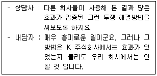
- 가정 사용하기
- 전이된 오류 정정하기
- 분류 및 재구성 기법 활용하기
- 저항감 재인식 및 다루기
(정답률: 66%)
5. 생애진로사정의 구조에서 중요주제에 해당하지 않는 것은?
- 요약
- 평가
- 강점과 장애
- 전형적인 하루
(정답률: 68%)
6. 집단상담의 특징에 관한 설명으로 틀린 것은?
- 집단상담은 상담사들이 제한된 시간 내에 적은 비용으로 보다 많은 내담자들에게 접근하는 것을 가능하게 한다.
- 효과적인 집단에는 언제나 직접적인 대인적 교류가 있으며 이것이 개인적 탐색을 도와 개인의 성장과 발달을 촉진시킨다.
- 집단은 집단과정의 다양한 문제에 많은 시간을 사용하게 되어 내담자의 개인적인 문제를 등한시 할 수 있다.
- 집단에서는 구성원 각자의 사적인 경험을 구성원 모두가 공유하지 않기 때문에 비밀유지가 쉽다.
(정답률: 86%)
7. Williamson의 직업문제 분류범주에 포함되지 않는 것은?
- 진로 무선택
- 흥미와 적성의 차이
- 진로선택에 대한 불안
- 진로선택 불확실
(정답률: 58%)
8. 다음에서 사용된 상담기법은?
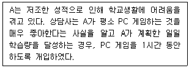
- 프리맥의 원리, 정적강화
- 정적강화, 자기교수훈련
- 체계적 둔감법, 자기교수훈련
- 부적강화, 자극통제
(정답률: 46%)
9. 직업상담사가 지켜야 할 윤리사항으로 옳은 것은?
- 습득된 직업정보를 가지고 다니면서 직업을 잦아준다.
- 습득된 직업정보를 먼저 가까운 사람들에 알려준다.
- 상담에 대한 이론적 지식보다는 경험적 훈련과 직관을 앞세워 구직활동을 도와준다
- 내담자가 자기로부터 도움을 받지 못하고 있음이 분명한 경우에는 상담을 종결하려고 노력한다.
(정답률: 70%)
10. 직업상담사의 직무내용과 가장 거리가 먼 것은?
- 직업문제에 대한 심리치료
- 직업관련 임금평가
- 직업상담 프로그램의 개발과 운영
- 구인·구직상담, 직업적응, 직업전환, 은퇴 후 등의 직업상담
(정답률: 77%)
11. 발달적 직업상담에서 직업정보가 갖추어야 할 조건이 아닌 것은?
- 부모와 개인의 직업적 수준과 그 차이, 그리고 그들의 적성, 흥미, 가치들 간의 관계
- 사회경제적 측면에서 수준별 직업의 유형 및 그러한 직업들의 특성
- 근로자의 이직 시 직업의 이동 방향과 비율을 결정하는 요인에 대한 정보
- 특정 직업분야의 접근가능성과 개인의 적성, 가치관, 성격특성 등의 요인들 간의 관계
(정답률: 46%)
12. 인지적 명확성 문제의 원인 중 경미한 정신건강 문제의 특성으로 옳은 것은?
- 심각한 약물남용 장애
- 잘못된 결정방식이 진지한 결정 방해
- 경험 부족에서 오는 고정관념
- 심한 가치관 고착에 따른 고정성
(정답률: 59%)
13. 상담 시 상담사의 질문으로 바람직하지 않은 것은?
- “당신이 선호하는 직업이 있다면 무엇인가요? 그런 이유를 말씀해 주시겠어요?”
- “당신이 특별히 좋아하는 것이 있다면 말씀해 주시겠어요?”
- “직업상담을 해야겠다고 결정했나요?”
- “어떻게 생각해야 할지 이해가 잘 가지 않는군요. 잘 모르겠어요. 제가 좀 더 확실하게 이해할 수 있도록 도와주시겠어요?”
(정답률: 69%)
14. 왜곡된 사고체계나 신념체계를 가진 내담자에게 실시하면 효과적인 상담기법은?
- 내담자 중심 상담
- 인지치료
- 정신분석
- 행동요법
(정답률: 77%)
15. 상담을 효과적으로 진행하는데 장애가 되는 면담 태도는?
- 내담자와 유사한 언어를 사용하는 태도
- 분석하고 충고하는 태도
- 비방어적 태도로 내담자를 편안하게 만드는 태도
- 경청하는 태도
(정답률: 86%)
16. 직업상담에서 특성-요인이론에 관한 설명으로 옳은 것은?
- 대부분의 사람들은 여섯 가지 유형으로 성격 특성을 분류할 수 있다.
- 각각의 개인은 신뢰할 만하고 타당하게 측정될 수 있는 고유한 특성의 집합이다.
- 개인은 일을 통해 개인적 욕구를 성취하도록 동기화되어 있다.
- 직업적 선택은 개인의 발달적 특성이다.
(정답률: 65%)
17. 아들러(Adler)의 개인심리학적 상담의 목표로 옳지 않은 것은?
- 사회적 관심을 갖도록 돕는다.
- 내담자의 잘못된 목표를 수정하도록 돕는다.
- 패배감을 극복하고 열등감을 감소시킬 수 있도록 돕는다.
- 전이해석을 통해 중요한 타인과의 관계 패턴을 알아 차리도록 돕는다.
(정답률: 62%)
18. 직업카드 분류법에 관한 설명으로 틀린 것은?
- 내담자의 흥미, 가치, 능력 등을 탐색하는 방법으로 활용된다.
- 내담자의 흥미나 능력 수준이 다른 사람에 비하여 얼마나 높은지 알 수 없다.
- 다른 심리검사에 비하여 내담자가 자신을 탐색하는 과정에 보다 능동적으로 참여하게 하는 방법이다.
- 표준화되어 있는 객관적 검사방법의 일종이다.
(정답률: 43%)
19. 정신분석적 상담에서 훈습의 단계에 해당하지 않는 것은?
- 환자의 저항
- 분석의 시작
- 분석자의 저항에 대한 해석
- 환자의 해석에 대한 반응
(정답률: 62%)
20. 내담자 중심 상담에서 사용되는 상담기법이 아닌 것은?
- 적극적 경청
- 역할연기
- 감정의 반영
- 공감적 이해
(정답률: 72%)
2과목: 직업심리학
21. 직무분석에 관한 설명으로 옳은 것은?
- 직무 관련 정보를 수집하는 절차이다.
- 직무의 내용과 성질을 고려하여 직무들 간의 상대적 가치를 결정하는 절차이다.
- 작업자의 직무수행 수준을 평가하는 절차이다.
- 작업자의 직무기술과 지식을 개선하는 공식적 절차이다.
(정답률: 32%)
22. Maslow의 욕구단계 이론 중 자아실현과 존중의 욕구 수준에 상응하는 내용으로 적합한 것은?
- Alderfer의 ERG 이론 중 존재욕구
- Herzberg의 2요인 이론 중 위생요인
- McClelland의 성취동기 이론 중 성취동기
- Adams의 공정성 이론 중 인정동기
(정답률: 40%)
23. 직업적성 검사의 측정에 관한 설명으로 옳은 것은?
- 개인이 맡은 특정 직무를 성공적으로 수행할 수 있는지를 측정한다.
- 일반적인 지적 능력을 알아내어 광범위한 분야에서 그 사람이 성공적으로 수행할 수 있는지를 측정한다.
- 직업과 관련된 흥미를 알아내어 직업에 관한 의사결정에 도움을 주기 위한 것이다.
- 개인이 가지고 있는 기질이라든지 성향 등을 측정하는 것으로 개인에게 습관적으로 나타날 수 있는 어떤 특징을 측정한다.
(정답률: 19%)
24. 솔직하고, 성실하며, 말이 적고, 고집이 세면서 직선적인 사람들은 홀랜드(Holland)의 어떤 작업환경에 잘 어울리는가?
- 탐구적(I)
- 예술적(A)
- 현실적(R)
- 관습적(C)
(정답률: 46%)
25. 수퍼(D. Super)의 진로발달이론에 관한 설명으로 틀린 것은?
- 개인은 능력이나 흥미, 성격에 있어서 각각 차이점을 갖고 있다.
- 진로발달이 란 진로에 관한 자아개념의 발달이다.
- 진로발달단계의 과정에서 재순환은 일어날 수 없다.
- 진로성숙도는 가설적인 구인이며 단일한 특질이 아니다.
(정답률: 75%)
26. 파슨스(Parsons)의 특성·요인이론에 관한 설명으로 틀린 것은?
- 개인의 특성과 직업의 요구가 일치할수록 직업적 성공 가능성이 크다.
- 사람들은 신뢰할 수 있고 타당하게 측정될 수 있는 특성을 지니고 있다.
- 특성은 특정 직무의 수행에서 요구하는 조건을 의미한다.
- 직업선택은 직접적인 인지과정이기 때문에 개인은 자신의 특성과 직업이 요구하는 특성을 연결할 수 있다.
(정답률: 55%)
27. 데이비스(R. Dawis)와 롭퀴스트(L. Lofquist)의 직업적응이론에 관한 설명으로 틀린 것은?
- 개인과 직업 환경의 조화를 6가지 유형으로 제안한다.
- 성격은 성격양식과 성격구조로 설명된다.
- 개인이 직업 환경과의 조화를 이루기 위해 역동적 적응과정을 경험한다.
- 지속성은 환경과의 상호작용을 얼마나 오랫동안 유지하는지를 의미한다.
(정답률: 28%)
28. 스트레스에 관한 설명으로 옳은 것은?
- 스트레스에 대한 일반적응증후는 경계, 저항, 탈진 단계로 진행된다.
- 1년간 생활변동 단위(life change unit)의 합이 90인 사람은 대단히 심한 스트레스를 겪는 사람이다.
- A유형의 사람은 B유형의 사람보다 스트레스에 더 인내력이 있다.
- 사회적 지지가 스트레스의 대처와 극복에 미치는 영향력은 거의 없다.
(정답률: 50%)
29. 신뢰도 계수에 관한 설명으로 틀린 것은?
- 신뢰도 계수는 점수 분포의 분산에 의해 영향을 받는다.
- 측정오차가 크면 신뢰도 계수는 작아진다.
- 수검자들 간의 개인차가 크면 신뢰도 계수는 작아진다.
- 추측해서 우연히 맞을 수 있는 문항이 많으면 신뢰도 계수가 작아진다.
(정답률: 32%)
30. 규준점수에 관한 설명으로 틀린 것은?
- Z점수 0에 해당하는 웩슬러(Wechsler) 지능검사 편차 IQ는 100이다.
- 백분위 50과 59인 두 사람의 원점수 차이는 백분위 90과 99인 두 사람의 원점수 차이와 같다.
- 평균과 표준편차가 60, 15인 규준집단에서 원점수 90의 T 점수는 70이다.
- 백분위 50에 해당하는 스테나인(stanine)의 점수는 5이다
(정답률: 42%)
31. 크롬볼츠(J. Krumboltz)의 사회학습 진로이론에 관한 설명으로 틀린 것은?
- 도구적 학습경험이란 행동과 결과의 관계를 학습하게 되는 것을 의미한다.
- 과제접근기술이란 개인이 어떤 과제를 성취하기 위해 동원하는 기술이다.
- 우연히 일어난 일들을 개인의 진로에 긍정적으로 활용하는 것이 중요하다.
- 개인의 진로선택에 영향을 미치는 요인에서 유전적 재능이나 체력 등의 요소를 간과했다.
(정답률: 40%)
32. 스트레스에 대처하기 위한 포괄적인 노력과 가장 거리가 먼 것은?
- 과정중심적 사고방식에서 목표 지향적 초고속 사고로 전환해야 한다.
- 가치관을 전환해야 한다.
- 스트레스에 정면으로 도전하는 마음가짐이 있어야 한다.
- 균형 있는 생활을 해야 한다.
(정답률: 63%)
33. 갓프레드슨(L. Gottfredson)의 진로발달이론에서 제시한 진로포부발달 단계가 아닌 것은?
- 내적 자아 확립단계
- 서열 획득단계
- 안정성 확립단계
- 사회적 가치 획득단계
(정답률: 25%)
34. 적성검사에서 높은 점수를 받은 사람이 입사 후 업무수행이 우수한 것으로 나타났다면, 이 검사는 어떠한 타당도가 높은 것인가?
- 구성타당도(construct validity)
- 내용타당도(content validity)
- 예언타당도(predictive validity)
- 공인타당도(concurrent validity)
(정답률: 56%)
35. 심리검사에 관한 설명으로 틀린 것은?
- 행동표본을 측정할 수 있다.
- 개인 간 비교가 가능하다.
- 심리적 속성을 직접적으로 측정한다.
- 심리평가의 근거자료 중 하나이다.
(정답률: 30%)
36. 작업자 중심 직무분석 에 관한 설명으로 틀린 것은?
- 직무를 수행하는데 요구되는 인간의 재능들에 초점을 두어서 지식, 기술, 능력, 경험과 같은 작업자의 개인적 요건들에 의해 직무가 표현된다.
- 직책분석설문지(PAQ)를 통해 직무분석을 실시할 수 있다.
- 각 직무에서 이루어지는 과제나 활동들이 서로 다르기 때문에 분석하고자 하는 직무 각각에 대해 표준화된 분석도구를 만들 수 없다.
- 직무분석으로부터 얻어진 결과는 작업자 명세서를 작성할 때 중요한 정보를 제공한다.
(정답률: 56%)
37. 경력개발 단계를 성장, 탐색, 확립, 유지, 쇠퇴의 5단계로 구분한 학자는?
- Bordin
- Colby
- Super
- Parsons
(정답률: 53%)
38. 조직에서의 스트레스를 매개하거나 조절하는 요인들 중 개인 속성이 아닌 것은?
- Type A형과 같은 성격 유형
- 친구나 부모와 같은 주변인의 사회적 지지
- 상황을 개인이 통제할 수 있느냐에 대한 신념
- 부정적인 사건들에서 빨리 벗어나는 능력
(정답률: 48%)
39. 직업지도 프로그램 선정 시 고려해야 할 사항과 가장 거리가 먼 것은?
- 활용하고자 하는 목적에 부합하여야 한다.
- 실시가 어렵더라도 효과가 뚜렷한 프로그램 이어야 한다.
- 프로그램의 효과를 평가할 수 있어야 한다.
- 활용할 프로그램은 비용이 적게 드는 경제성을 지녀야 한다.
(정답률: 61%)
40. Strong 검사에 관한 설명으로 옳은 것은?
- 기본흥미척도(BIS)는 Holland의 6가지 유형을 제공한다.
- Strong 진로탐색검사는 진로성숙도 검사와 직업흥미검사로 구성되어 있다.
- 업무, 학습, 리더십, 모험심을 알아보는 기본흥미척도(BIS)가 포함되어 있다.
- 개인특성척도(BSS)는 일반직업분류(GOT)의 하위척도로서 특정흥미분야를 파악하는데 도움이 된다.
(정답률: 30%)
3과목: 직업정보론
41. 워크넷에서 제공하는 성인용 직업적성검사의 적성요인과 하위검사의 연결로 틀린 것은?
- 언어력 - 어휘력 검사, 문장독해력 검사
- 수리력 - 계산능력 검사, 자료해석력 검사
- 추리력 - 수열추리력 1, 2검사, 도형추리력 검사
- 사물지각력 - 조각맞추기 검사, 그림맞추기 검사
(정답률: 21%)
42. 한국직업사전(2020)의 작업강도 중 무엇에 관한 설명인가?
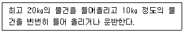
- 가벼운 작업
- 보통 작업
- 힘든 작업
- 아주 힘든 작업
(정답률: 55%)
43. 워크넷에서 채용정보 상세검색에 관한 설명으로 틀린 것은?
- 최대 10개의 직종 선택이 가능하다.
- 연령별 채용정보를 검색할 수 있다.
- 재택근무 가능 여부를 검색할 수 있다.
- 희망임금은 연봉, 월급, 일급, 시급별로 입력할 수 있다.
(정답률: 44%)
44. 다음은 한국직업사전(2020)에 수록된 어떤 직업에 관한 설명인가?
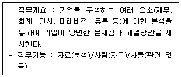
- 직무분석가
- 시장조사분석가
- 환경영향평가원
- 경영컨설턴트
(정답률: 53%)
45. 2022년 적용 최저임금은 얼마인가?
- 8350원
- 8590원
- 8720원
- 9160원
(정답률: 68%)
46. 국민내일배움카드 제도를 지원받을 수 있는 자는?
- 만 65세인 사람
- 「사립학교교직원 연금법」을 적용받고 현재 재직 중인 사람
- 「군인연금법」을 적용받고 현재 재직 중인 사람
- 지방자치단체로부터 훈련비를 지원받는 훈련에 참여하는 사람
(정답률: 49%)
47. 직업정보관리에 관한 설명으로 틀린 것은?
- 직업정보의 범위는 개인, 직업, 미래에 대한 정보 등으로 구성되어 있다.
- 직업정보원은 정부부처, 정부투자출연기관, 단체 및 협회, 연구소, 기업과 개인 등이 있다.
- 직업정보 가공 시 전문적인 지식이 없어도 이해할 수 있도록 가급적 평이한 언어로 제공하여야 한다.
- 개인의 정보는 보호되어야 하기 때문에 구직 시 연령, 학력 및 경력 등의 취업과 관련된 정보는 제한적으로 제공되어야 한다.
(정답률: 47%)
48. 질문지를 활용한 면접조사를 통해 직업정보를 수집할 때, 면접자가 지켜야 할 일반적 원칙으로 틀린 것은?
- 질문지를 숙지하고 있어야 한다.
- 응답자와 친숙한 분위기를 형성해야 한다.
- 개방형 질문인 경우에는 응답 내용을 해석·요약하여 기록해야 한다.
- 면접자는 응답자가 이질감을 느끼지 않도록 복장이나 언어사용에 유의해야 한다.
(정답률: 58%)
49. 워크넷에서 제공하는 학과정보 중 사회계열에 해당하지 않는 학과는?
- 경찰행정학과
- 국제학부
- 문헌정보학과
- 지리학과
(정답률: 48%)
50. 2022년 신규 정기검정으로 시행되는 국가기술자격 종목은?
- 방재기사
- 떡제조기능사
- 가구제작산업기사
- 정밀화학기사
(정답률: 28%)
51. 다음은 국가기술자격 검정의 기준 중 어떤 등급에 관한 설명인가?
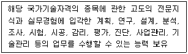
- 기술사
- 기사
- 산업기사
- 기능장
(정답률: 44%)
52. 직업정보로서 갖추어야 할 요건에 대한 설명으로 틀린 것은?
- 직업정보는 객관성이 담보되어야 한다.
- 직업정보 활용의 효율성 측면에서 이용 대상자의 진로발달단계나 수준, 이용 목적에 적합한 직업정보를 개발하여 제공되는 것이 바람직하다.
- 우연히 획득되거나 출처가 불명확한 직업정보라도 내용이 풍부하다면 직업정보로서 가치가 있다고 판단한다.
- 직업정보는 개발년도를 명시하여 부적절한 과거의 직업세계나 노동시장 정보가 구직자나 청소년에게 제공되지 않도록 하는 것이 바람직하다.
(정답률: 68%)
53. 다음은 한국표준산업분류(제10차)에서 산업분류 결정방법이다. ( )에 알맞은 것은?
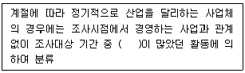
- 급여액
- 근로소득세액
- 산출액
- 부가가치액
(정답률: 44%)
54. 분야별 고용정책 중 일자리창출 정책과 가장 거리가 먼 것은?
- 고용유지지원금
- 실업크레딧 지원
- 일자리함께하기 지원
- 사회적기업 육성
(정답률: 47%)
55. 다음은 한국표준직업분류(제7차)에서 직업분류의 일반 원칙이다. ( )에 알맞은 것은?
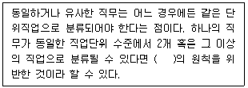
- 단일성
- 배타성
- 포괄성
- 경제성
(정답률: 29%)
56. 한국표준산업분류(제10차)의 주요 개정내용으로 틀린 것은?
- 채소작물 재배업에 마늘, 딸기 작물 재배업을 포함
- 안경 및 안경렌즈 제조업을 의료용기기 제조업에서 사진장비 및 기타 광학기기 제조업으로 이동
- 산업용 기계 및 장비 수리업은 국제표준산업분류(ISIC)에 맞춰 수리업에서 제조업 중 중분류를 신설하여 이동
- 어업에서 해면은 해수면으로, 수산 종묘는 수산 종자로 명칭을 변경
(정답률: 29%)
57. 한국표준산업분류(제10차)의 산업분류 적용원칙으로 틀린 것은?
- 자본재로 주로 사용되는 산업용 기계 및 장비의 전문적인 수리활동은 경상적인 유지·수리를 포함하여 “95 개인 및 소비용품 수리업”으로 분류
- 생산단위는 산출물 뿐만 아니라 투입물과 생산공정 등을 함께 고려하여 그들의 활동을 가장 정확하게 설명한 항목에 분류
- 산업활동이 결합되어 있는 경우에는 그 활동단위의 주된 활동에 따라 분류
- 공식적인 생산물과 비공식적 생산물, 합법적 생산물과 불법적인 생산물을 달리 분류하지 않음
(정답률: 38%)
58. 한국표준직업분류(제7차)의 대분류 항목과 직능 수준과의 관계가 올바르게 연결된 것은?
- 전문가 및 관련 종사자 - 제4직능 수준 혹은 제3직능 수준 필요
- 사무 종사자 - 제3직능 수준 필요
- 단순노무 종사자 - 제2직능 수준 필요
- 군인 - 제1직능 수준 필요
(정답률: 48%)
59. 직업정보의 처리에 대한 설명으로 틀린 것은?
- 직업정보는 전문가가 분석해야 한다.
- 직업정보 제공 시에는 이용자의 수준에 맞게 한다.
- 직업정보 수집 시에는 명확한 목표를 세운다.
- 직업정보 제공 시에는 직업의 장점만을 최대한 부각해서 제공한다.
(정답률: 68%)
60. Q-net(www.q-net.or.kr)에서 제공하는 국가별 자격제도 정보가 아닌 것은?
- 영국의 자격제도
- 프랑스의 자격제도
- 호주의 자격제도
- 스위스의 자격제도
(정답률: 44%)
4과목: 노동시장론
61. 다음 중 사회적 비용이 상대적으로 가장 적게 유발되는 실업은?
- 경기적 실업
- 계절적 실업
- 마찰적 실업
- 구조적 실업
(정답률: 53%)
62. 불경기에 발생하는 부가노동자효과(added worker effect)와 실망실업자효과(discouraged worker effect)에 따라 실업률이 변화한다. 실업률에 미치는 효과의 방향성이 옳은 것은? (단, ＋ : 상승효과, －： 감소효과)
- 부가노동자효과 : ＋, 실망실업자효과 : －
- 부가노동자효과 : －, 실망실업자효과 : －
- 부가노동자효과 : ＋, 실망실업자효과 : ＋
- 부가노동자효과 : －, 실망실업자효과 : ＋
(정답률: 49%)
63. 개별기업수준에서 노동에 대한 수요곡선을 이동시키는 요인을 모두 고른 것은?
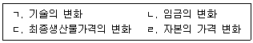
- ㄱ, ㄴ, ㄷ
- ㄱ, ㄴ, ㄹ
- ㄱ, ㄷ, ㄹ
- ㄴ, ㄷ, ㄹ
(정답률: 29%)
64. 노조가 임금인상 투쟁을 벌일 때, 고용량 감소효과가 가장 적게 나타나는 경우는?
- 노동수요의 임금탄력성이 0.1일 때
- 노동수요의 임금탄력성이 1일 때
- 노동수요의 임금탄력성이 2일 때
- 노동수요의 임금탄력성이 5일 때
(정답률: 40%)
65. 일부 사람들이 실업급여를 계속 받기 위해 채용될 가능성이 매우 낮은 곳에서만 일자리를 탐색하며 실업상태를 유지하고 있다. 다음 중 이러한 사람들이 실업자가 아니라 일할 의사가 없다는 이유로 비경제활동인구로 분류될 때 나타나는 현상으로 옳은 것은?
- 실업률과 경제활동참가율 모두 높아진다.
- 실업률과 경제활동참가율 모두 낮아진다.
- 실업률은 낮아지는 반면, 경제활동참가율은 높아진다.
- 실업률은 높아지는 반면, 경제활동참가율은 낮아진다.
(정답률: 42%)
66. 노동조합측 쟁의수단에 해당하지 않는 것은?
- 태업
- 보이콧
- 피케팅
- 직장폐쇄
(정답률: 54%)
67. 임금에 대한 설명으로 틀린 것은?
- 산업사회에서 사회적 신분의 기준이 되기도 한다.
- 임금수준은 인적 자원의 효율적 배분과는 무관하다.
- 가장 중요한 소득원천 중의 하나이다.
- 유효수요에 영향을 미쳐 경제의 안정과 성장에 밀접한 관련이 있다.
(정답률: 57%)
68. 2차 노동시장의 특징에 해당되는 것은?
- 높은 임금
- 높은 안정성
- 높은 이직률
- 높은 승진률
(정답률: 48%)
69. 연공급의 특징과 가장 거리가 먼 것은?
- 기업에 대한 귀속의식 제고
- 전문기술인력 확보 곤란
- 근로자에 대한 교육훈련의 효과 제고
- 인건비 부담의 감소
(정답률: 50%)
70. A국의 취업자가 200만 명, 실업자가 10만 명, 비경제활동인구가 100만 명이라고 할 때, A국의 경제활동참가율은?
- 약 66.7%
- 약 67.7%
- 약 69.2%
- 약 70.4%
(정답률: 48%)
71. 조합원 자격이 있는 노동자만을 채용하고 일단 고용된 노동자라도 조합원 자격을 상실하면 종업원이 될 수 없는 숍 제도는?
- 오픈숍
- 유니온숍
- 에이젼시숍
- 클로즈드숍
(정답률: 53%)
72. 기업별 노동조합에 관한 설명으로 틀린 것은?
- 노동자들의 횡단적 연대가 뚜렷하지 않고, 동종, 동일산업이라도 기업 간의 시설규모, 지불능력의 차이가 큰 곳에서 조직된다.
- 노동조합이 회사의 사정에 정통하여 무리한 요구로 인한 노사분규의 가능성이 낮다.
- 사용자와의 밀접한 관계로 공동체 의식을 통한 노사협력 관계를 유지할 수 있어 어용화의 가능성이 낮다.
- 각 직종 간의 구체적 요구조건을 공평하게 처리하기 곤란하여 직종 간에 반목과 대립이 발생할 수 있다.
(정답률: 43%)
73. 최저임금제도의 기대효과로 가장 거리가 먼 것은?
- 소득분배의 개선
- 기업 간 공정경쟁의 확보
- 산업평화의 유지
- 실업의 해소
(정답률: 51%)
74. 임금격차의 원인을 모두 고른 것은?
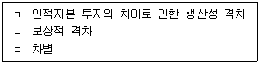
- ㄱ, ㄴ
- ㄱ, ㄷ
- ㄴ, ㄷ
- ㄱ, ㄴ, ㄷ
(정답률: 46%)
75. 다음 중 가장 적극적인 근로자의 경영참가 형태는?
- 단체교섭에 의한 참가
- 단체행동에 의한 참가
- 노사협의회에 의한 참가
- 근로자중역, 감사역제에 의한 참가
(정답률: 48%)
76. 선별가설(screening hypothesis)에 대한 설명과 가장 거리가 먼 것은?
- 교육훈련이 생산성을 직접 높이는 것은 아니고 유망한 근로자를 식별해주는 역할을 한다.
- 빈곤문제 해결을 위해서는 교육훈련 기회를 확대하는 것이 중요하다.
- 학력이 높은 사람이 소득이 높은 것은 교육 때문이 아니고 원래 능력이 우수하기 때문이다.
- 근로자들은 자신의 능력과 재능을 보여주기 위해 교육에 투자한다.
(정답률: 30%)
77. 직무급 임금체계에 관한 설명으로 가장 적합한 것은?
- 정기승급에 의한 생활안정으로 근로자의 기업에 대한 귀속의식을 고양시킨다.
- 기업풍토, 업무내용 등에서 보수성이 강한 기업에 적합하다.
- 근로자의 능력을 직능고과의 평가결과에 따라 임금을 결정한다.
- 노동의 양뿐만 아니라 노동의 질을 동시에 평가하는 임금 결정 방식이다.
(정답률: 32%)
78. 단체교섭에서 사용자의 교섭력에 관한 설명으로 가장 거리가 먼 것은?
- 기업의 재정능력이 좋으면 사용자의 교섭력이 높아진다.
- 사용자 교섭력의 원천 중 하나는 직장폐쇄(lockout)를 할 수 있는 권리이다.
- 사용자는 쟁의행위기간 중 그 쟁의행위로 중단된 업무를 원칙적으로 도급 또는 하도급을 줄 수 있다.
- 비조합원이 조합원의 일을 대신할 수 있는 여지가 크다면, 그만큼 사용자의 교섭력이 높아진다.
(정답률: 41%)
79. 실업에 관한 설명으로 옳은 것은?
- 마찰적 실업은 자연실업률 측정에 포함되지 않는다.
- 더 좋은 직장을 구하기 위해 잠시 직장을 그만둔 경우는 경기적 실업에 해당한다.
- 경기적 실업은 자연실업률 측정에 포함된다.
- 현재의 실업률에서 실망실업자가 많아지면 실업률은 하락한다.
(정답률: 36%)
80. 내부노동시장의 형성요인과 가장 거리가 먼 것은?
- 관습
- 현장훈련
- 임금수준
- 숙련의 특수성
(정답률: 32%)
5과목: 노동관계법규
81. 파견근로자보호 등에 관한 법률상 사용사업주가 파견근로자를 직접 고용할 의무가 발생하는 경우가 아닌 것은?
- 고용노동부장관의 허가를 받지 않고 근로자파견 사업을 하는 자로부터 근로자파견의 역무를 제공받은 경우
- 제조업의 직접생산공정업무에서 일시적·간헐적으로 사용기간 내에 파견근로자를 사용한 경우
- 건설공사현장에서 이루어지는 업무에서 부상으로 결원이 생겨 파견근로자를 사용한 경우
- 건설공사현장에서 이루어지는 업무에서 연차 유급휴가로 결원이 생겨 파견근로자를 사용한 경우
(정답률: 19%)
82. 국민평생직업능력개발법령상 근로자의 정의로서 가장 적합한 것은?
- 1주 동안의 소정근로시간이 그 사업장에서 같은 종류의 업무에 종사하는 통상 근로자의 1주 동안의 소정근로시간에 비하여 짧은 자
- 직업의 종류와 관계없이 임금을 목적으로 사업이나 사업장에 근로를 제공하는 사람
- 직업의 종류를 불문하고 임금·급료 기타 이에 준하는 수입에 의하여 생활하는 자
- 사업주에게 고용된 사람과 취업할 의사가 있는 사람
(정답률: 42%)
83. 고용보험법령상 다음 사례에서 구직급여의 소정 급여일수는?
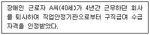
- 120일
- 150일
- 180일
- 210일
(정답률: 26%)
84. 고용보험법령상 용어의 정의로 옳은 것은?
- “피보험자”란 근로기준법상 근로자와 사업주를 말한다.
- “실업”이란 근로의 의사와 능력이 있음에도 불구하고 취업하지 못한 상태에 있는 것을 말한다.
- “보수”란 사용자로부터 받는 일체의 금품을 말한다.
- “일용근로자”란 3개월 미만 동안 고용된 자를 말한다.
(정답률: 53%)
85. 국민 평생 직업능력 개발법령상 고용노동부장관이 반드시 지정직업훈련시설의 지정을 취소해야 하는 경우에 해당하는 것은?
- 시정명령에 따르지 아니한 경우
- 변경지정을 받지 아니하고 지정 내용을 변경하는 등 부정한 방법으로 지정직업훈련시설을 운영한 경우
- 훈련생을 모집할 때 거짓 광고를 한 경우
- 거짓으로 지정을 받은 경우
(정답률: 43%)
86. 근로기준법상 미성년자의 근로계약에 관한 설명으로 틀린 것은?
- 원칙적으로 15세 이상 18세 미만인 사람의 근로시간은 1일에 7시간, 1주에 35시간을 초과하지 못한다.
- 미성년자는 독자적으로 임금을 청구할 수 없다.
- 고용노동부장관은 근로계약이 미성년자에게 불리하다고 인정하는 경우에는 이를 해지할 수 있다.
- 친권자나 후견인은 미성년자의 근로계약을 대리할 수 없다.
(정답률: 50%)
87. 헌법상 노동기본권 등에 관한 설명으로 틀린 것은?
- 국가는 근로자의 고용의 증진과 적정임금의 보장에 노력하여야 한다.
- 여자의 근로는 특별한 보호를 받으며 고용·임금 및 근로조건에 있어서 부당한 차별을 받지 아니한다.
- 국가는 법률이 정하는 바에 의하여 최저임금제를 시행하여야 한다.
- 공무원인 근로자는 자주적인 단결권·단체교섭권 및 단체행동권을 가진다.
(정답률: 63%)
88. 개인정보보호법령상 개인정보 보호위원회(이하 “보호위원회”라 한다)에 관한 설명으로 틀린 것은?
- 대통령 소속으로 보호위원회를 둔다.
- 보호위원회는 상임위원 2명을 포함한 9명의 위원으로 구성한다.
- 보호위원회의 회의는 재적위원 과반수의 출석으로 개의하고, 출석위원 과반수의 찬성으로 의결한다.
- 「정당법」에 따른 당원은 보호위원회 위원이 될 수 없다.
(정답률: 31%)
89. 고용상 연령차별금지 및 고령자고용촉진에 관한 법령상 고령자 고용정보센터의 업무로 명시되지 않은 것은?
- 고령자에 대한 구인·구직 등록
- 고령자 고용촉진을 위한 홍보
- 고령자에 대한 직장 적응훈련 및 교육
- 고령자의 실업급여 지급
(정답률: 59%)
90. 직업안정법령상 신고를 하지 아니하고 할 수 있는 무료직업소개사업이 아닌 것은?
- 한국산업인력공단이 하는 직업소개
- 한국장애인고용공단이 장애인을 대상으로 하는 직업소개
- 국민체육진흥공단이 체육인을 대상으로 하는 직업소개
- 근로복지공단이 업무상 재해를 입은 근로자를 대상으로 하는 직업소개
(정답률: 54%)
91. 고용보험법령상 실업급여에 관한 설명으로 틀린 것은?
- 실업급여로서 지급된 금품에 대하여는 국가나 지방자치단체의 공과금을 부과하지 아니한다.
- 실업급여를 받을 권리는 양도하거나 담보로 제공할 수 없다.
- 실업급여수급계좌의 해당 금융기관은 이 법에 따른 실업급여만이 실업급여수급계좌에 입금되도록 관리하여야 한다.
- 구직급여에는 조기재취업 수당, 직업능력개발 수당, 광역 구직활동비, 이주비가 있다.
(정답률: 34%)
92. 근로기준법령상 사용자가 3년간 보존하여야 하는 근로계약에 관한 중요한 서류로 명시되지 않은 것은?
- 임금대장
- 휴가에 관한 서류
- 고용·해고·퇴직에 관한 서류
- 퇴직금 중간정산에 관한 증명서류
(정답률: 29%)
93. 직업안정법령상 직업소개사업을 겸업할 수 있는 자는?
- 식품접객업 중 유흥주점영업자
- 숙박업자
- 경비용역업자
- 결혼중개업자
(정답률: 53%)
94. 근로기준법령상 이행강제금에 관한 설명으로 옳은 것은?
- 노동위원회는 구제명령을 받은 후 이행기한까지 구제명령을 이행하지 아니한 사용자에게 3천만원 이하의 이행강제금을 부과한다.
- 노동위원회는 이행강제금 납부의무자가 납부기한까지 이행강제금을 내지 아니하면 즉시 국세 체납처분의 예에 따라 징수할 수 있다.
- 노동위원회는 최초의 구제명령을 한 날을 기준으로 매년 4회의 범위에서 구제명령이 이행될 때까지 반복하여 이행강제금을 부과·징수할 수 있다.
- 근로자는 구제명령을 받은 사용자가 이행기한까지 구제명령을 이행하지 아니하면 이행기한이 지난 때부터 30일 이내에 그 사실을 노동위원회에 알려줄 수 있다.
(정답률: 17%)
95. 남녀고용평등과 일·가정 양립 지원에 관한 법령상 고용에 있어서 남녀의 평등한 기회와 대우를 보장하여야 할 사항으로 명시되지 않은 것은?
- 모집과 채용
- 임금
- 근로시간
- 교육·배치 및 승진
(정답률: 50%)
96. 기간제 및 단시간근로자 보호 등에 관한 법률상 차별시정제도에 대한 설명으로 틀린 것은?
- 기간제근로자는 차별적 처우를 받은 경우 노동위원회에 차별적 처우가 있은 날부터 6개월이 경과하기 전에 그 시정을 신청할 수 있다.
- 기간제근로자가 차별적 처우의 시정신청을 하는 때에는 차별적 처우의 내용을 구체적으로 명시하여야 한다.
- 노동위원회는 차별적 처우의 시정신청에 따른 심문의 과정에서 관계당사자 쌍방 또는 일방의 신청 또는 직권에 의하여 조정(調停)절차를 개시할 수 있다.
- 시정신청을 한 근로자는 사용자가 확정된 시정명령을 이행하지 아니하는 경우 이를 중앙노동위원회에 신고하여야 한다.
(정답률: 30%)
97. 다음 ( )에 알맞은 것은?
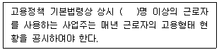
- 50
- 100
- 200
- 300
(정답률: 52%)
98. 남녀고용평등과 일·가정 양립 지원에 관한 법령상 다음 ( )안에 각각 알맞은 것은?
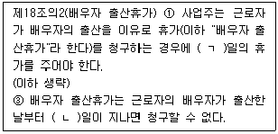
- ㄱ : 5, ㄴ : 30
- ㄱ : 5, ㄴ : 90
- ㄱ : 10, ㄴ : 30
- ㄱ : 10, ㄴ : 90
(정답률: 48%)
99. 남녀고용평등과 일·가정 양립 지원에 관한 법률에 명시되어 있는 내용이 아닌 것은?
- 직장 내 성희롱의 금지
- 배우자 출산휴가
- 육아휴직
- 생리휴가
(정답률: 52%)
100. 고용정책 기본법상 근로자의 고용촉진 및 사업주의 인력 확보 지원시책이 아닌 것은?
- 구직자와 구인자에 대한 지원
- 학생 등에 대한 직업지도
- 취업취약계층의 고용촉진 지원
- 업종별·지역별 고용조정의 지원
(정답률: 25%)